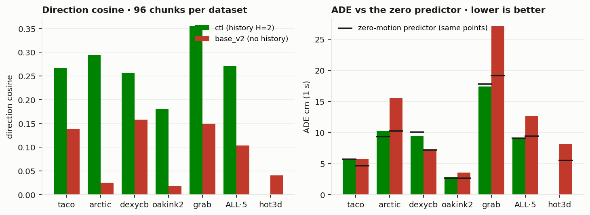

[TL;DR] Removing history zeroed the new base; restoring it recovers ctl
Closed: contact λ · mix · 320M
Positive: random origin jit1m
Decide: ct · po05 · GR-1 object set
Trainer validation vs step — direction cosine (left) · ADE ÷ zero-predictor ADE (right, 1.0 = zero predictor) · ctl / jit1m: v1 corpus, 6.00 eff ep at 110,996 steps · base_v2 / base_v3: v2 corpus, 4.14 eff ep at 110,996 · base_v3 dashed = live, last point step 32,500
trainer val = in-training val loader, one basis per corpus (v1 zero 0.1306 m · v2 zero 0.1242 m) · final numbers on slides 4–5 come from ieval on stratified chunks, not from these curves
Method (1): the baseline recipe, ctl → base_v2 → base_v3
base_v2 changed eleven things at once; base_v3 changes one back.
lever
ctl
base_v2
base_v3
corpus
v1 · 5 datasets
v2 · 6 datasets · HOT3D 31 % of chunks
= base_v2
objects
cap 2 obj × 512 pts
cap 16 obj × 256 pts · parts×8 selection
= base_v2
validity
motion heuristic
dataset tracking flags
= base_v2
origin
hand centre
random within 1 m (jit1m)
= base_v2
history
H = 2 (0.1 / 0.2 s)
none
H = 2 — the one change
compute
16 × 2 H100 · 110,996 st = 6.00 ep
token-budget 8 × 4 H100 · 110,996 st = 4.14 ep
= base_v2 · job 7487
Recipe per base — 120M video-DiT, flow matching, T = 10 @ 10 Hz throughout; eff ep = steps × eff batch ÷ corpus
base_v2 / base_v3 configs: pull4/code configs · v2 corpus = all tracked objects + HOT3D, 901,728 chunks after validity · I-SERIES record: history for 3,400 steps beats no-history for 110,000
Results
Closed levers on the ctl basis
480 stratified chunks · every arm paired against ctl · 10k bootstrap
one positive lever (jit1m); contact λ, mix, 320M closed
New base: base_v2 at chance, base_v3 restores history
GR-1 zero-shot closed loop
Paired vs ctl — Δcos (left) and ΔADE cm (right), mean · 95 % CI · n = 480, base_v2 on the 224 shared keys
480 · 6 ep · ctl 0.270 / 9.10
cos
ADE cm
Δcos vs ctl
w_ep · episode-weighted mix
0.270
9.13
+0.000
ciou_0p001 · contact λ 0.001
0.272
9.12
+0.002
ciou_0p1 · contact λ 0.1
0.182
10.50
−0.088
ciou_1p0 · contact λ 1.0
0.146
11.47
−0.124
320M · eff 256 · 9 ep
0.232
9.94
−0.038
jit1m · origin within 1 m
0.308
8.36
+0.038
per-chunk means · zero ADE 9.08 cm
Closed · no ETA — no further arms on the ctl recipe; jit1m is carried into base_v2 / base_v3
New base: base_v2 at chance, base_v3 restores history
one basis: the 224 chunk keys shared by both bases (arctic 96 · grab 96 · dexycb 32)
not an evaluator bug: trainer val agrees at every step; local weights give coherent fields
GR-1 zero-shot closed loop

ctl vs base_v2 per dataset — cosine (left) · ADE vs each arm's own zero predictor (right) · 96 chunks per dataset, each on its own basis
224 shared keys
cos
coshand
ADE cm
zero cm
ctl · H = 2 · 6.00 ep
0.317
0.381
12.96
12.84
base_v2 · no history · 4.14 ep
0.099
0.135
19.18
13.56
paired Δ base_v2 − ctl
−0.218 [−0.267, −0.169]
ΔADE +6.2 [+4.9, +7.7]
base_v3 · H = 2 · 4.14 ep
Sep 5 ≈23:00 KST · target: ctl row
same (dataset, key) chunks in both evals · zero = each base's own zero predictor on those keys
ETA · base_v3 · 7487 · 4×H100 · 0.278 s/step · +4.5 h compute → Sat 09-05 ≈22:40 KST · ieval + paired +20 min → ≈23:00
base_v2 on 528 (96 × 6): cos 0.092, ADE 11.83 vs zero 8.66 · 432 (5 ds): 0.104, 12.65 vs 9.37 · hot3d: 0.041, 8.14 vs 5.49 · local check: NN cosine ≈ 1.0, magnitude 95–106 %
Results
Closed levers on the ctl basis
New base: base_v2 at chance, base_v3 restores history
GR-1 zero-shot closed loop
rlwrld · robocasa tabletop · 44 tasks × 3 eps · both hands · two objects (pick + target)
base_v2 not swept (chance-level); its 256-pt object path verified in MuJoCo (157980)
GR-1 sweeps — final hand → target per task (mean of 3 eps), bar = median · only the model varies
median over tasks of the per-task mean · sim-fail tasks excluded (appendix)
ETA · base_v3 weights → rlwrld → 44 tasks × 3 · ≈+5 h compute after 23:00 KST · queue unestimated → Sun 09-06 morning
sweep_table.json per sweep · success = robocasa task flag · PnPAppleToPlate never ran (coffee_pod error, appendix) · per-task clips: decks #10 / #11
AR rollouts · 5 chunks · 5 s · base_v2 · step 110,996 · 4.14 eff ep
taco ep 5552 · “pour in some the kettle with the kettle” · cos k0 0.22 → k4 0.32arctic ep 212 · “use the notebook” · cos k0 0.67 → k4 0.05oakink2 ep 3035 · “Heat the test tube and put off the alcohol burner after heating.” · cos k0 0.23 → k4 0.16grab ep 1434 · “lift the banana” · cos k0 0.64 → k4 −0.34taco ep 6147 · “scrape off the plate with the spoon” · cos k0 0.61 → k4 0.29arctic ep 236 · “use the laptop” · cos k0 0.43 → k4 −0.09oakink2 ep 3059 · “Heat the beaker, put off the alcohol burner after heating, and stir …” · cos k0 0.11 → k4 −0.05grab ep 2219 · “browse the camera” · cos k0 0.49 → k4 −0.26
WILL UPDATEbase_v3 · same episode · taco 5552
Sep 5 ≈23:30 KST
WILL UPDATEbase_v3 · same episode · arctic 212
Sep 5 ≈23:30 KST
WILL UPDATEbase_v3 · same episode · oakink2 3035
Sep 5 ≈23:30 KST
WILL UPDATEbase_v3 · same episode · grab 1434
Sep 5 ≈23:30 KST
GT left · pred right · objects orange · R hand green · L hand purple · each chunk starts from the previous prediction · comparisons by construction (same episodes) · DexYCB: no 5-chunk eps
Single chunk · 1 s · base_v2 · step 110,996 · 4.14 eff ep
taco chunk 40693 · “dust the kettle with the roller” · ADE 13.0 cmarctic chunk 3772 · “use the ketchup” · ADE 54.5 cmdexycb chunk 4142 · “grasp the tomato soup can” · ADE 15.4 cmoakink2 chunk 35323 · “Place the asbestos mesh for heating, ignite the alco…” · ADE 2.0 cmgrab chunk 6998 · “inspect the elephant” · ADE 69.4 cmtaco chunk 41942 · “empty the cup with the kettle” · ADE 13.3 cmarctic chunk 407 · “use the microwave” · ADE 55.5 cmdexycb chunk 4320 · “grasp the bleach cleanser” · ADE 12.3 cmoakink2 chunk 37412 · “Ignite the alcohol burner.” · ADE 7.8 cmgrab chunk 9342 · “shake the water bottle” · ADE 26.3 cm
WILL UPDATEbase_v3 · same chunks · taco
Sep 5 ≈23:30 KST
WILL UPDATEbase_v3 · same chunks · arctic
Sep 5 ≈23:30 KST
WILL UPDATEbase_v3 · same chunks · dexycb
Sep 5 ≈23:30 KST
WILL UPDATEbase_v3 · same chunks · oakink2
Sep 5 ≈23:30 KST
WILL UPDATEbase_v3 · same chunks · grab
Sep 5 ≈23:30 KST
GT left · pred right · objects orange · R hand green · L hand purple · 2 most dynamic of 40 val chunks per dataset · k = 8 samples · cfg 1.0 · comparisons by construction (same chunks)
Summary · running / due / your decisions · 2026-09-05
base_v3 lands tonight; two arms and one sweep wait on your call.
A · running
progress · target
lands
base_v3 7487 · 4×H100
≈40k / 110,996 · val cos 0.304 @32.5k
+4.5 h → Sat ≈22:40
base_v2_ct 7353 · λ 0.1
budget ≈17:15 KST · no history
eval for record
base_v2_po05 7354 · p 0.5
queued · no history
unestimated
B · due, no input
work
when
base_v3 ieval + paired + deck
+20 min
Sat ≈23:00 KST
base_v3 AR + single-chunk clips
+30 min
Sat ≈23:30 KST
GR-1 base_v3 · 44 × 3 · rlwrld
≈+5 h · queue unestimated
Sun 09-06 morning
C · your decisions
options
recommendation · deadline
1 · ct / po05
finish on base_v2 (no history) · cancel, re-run both on base_v3
cancel and re-run on base_v3 · tonight
2 · GR-1 object set
two objects (pick + target) · all scene objects (variable sets now supported)
paired arm on base_v3, two vs all · before Sun
3 · camera-frame arm
launch after base_v3 · defer
defer · after the 23:00 read
ETA at a glance · base_v3 lands ≈22:40 · metrics ≈23:00 · clips ≈23:30 (Sat 09-05 KST) · GR-1 base_v3 Sun 09-06 morning · ct budget ≈17:15 · po05 unestimated
grey italic = not landed · steps at 0.278 s each on 4×H100 · silence defaults to the recommendation
Appendix · notes on the record (2026-09-05)
FRESH-on-requeue bug — a preempted job restarted from scratch instead of its checkpoint: base_v2_ct lost 62k steps and was resumed from its 50k checkpoint as job 7353; the requeue path now resumes from the latest checkpoint.
set -e seeding bug — base_v3's first launch (7459) died in 1 s: the seed line returned non-zero under set -e; fixed, relaunched as 7487 at 14:05 KST.
PnPAppleToPlate broken since the 09-03 sweep — robocasa raises "No valid categories … ['coffee_pod']" at reset; it is one of the 5–7 sim-fail tasks per sweep that never ran (with PnPCounterToPan, PnPCupToDishRackUpperLevel, PnPVegetableBowlToPlate and one or two sweep-specific failures).
Chunk keys re-indexed in v2 — taco and oakink2 chunk ids changed with the v2 corpus, so the paired test between bases runs on the 224 keys shared by both evals only (arctic 96, grab 96, dexycb 32); the 432 / 528 numbers are unpaired.
TACO generated text glitches — some captions are malformed ("pour in some the kettle with the kettle"); they are the training text and are shown verbatim in the clip captions.
GR-1 jit1m sweep — the sweep_table.json holds 39 tasks / 117 episodes with 1 success; the earlier partial count (1 / 39 at 16 tasks) is superseded by the file.
![Two line charts of trainer validation versus training step for five arms. Left: direction cosine. ctl and jit1m rise from about 0.24 and 0.17 at 2,500 steps to 0.51 and 0.48 at 110,996; base_v2 stays between 0.00 and 0.13 for the whole run; base_v2_po05 tracks base_v2 up to 37,500 steps; base_v3, dashed and live, rises from 0.17 at 2,500 to 0.30 at 32,500. Right: ADE divided by the zero-predictor ADE with a dotted line at 1.0. ctl and jit1m fall from 1.07 to 0.84 and 0.81; base_v2 rises from 1.10 to 1.21; base_v3 sits at 0.998 at 32,500 steps.](assets/fig_valcurves.png)